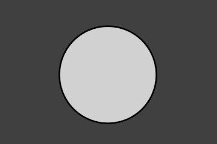

Line Set¶
A line set selects, among the lines (edges) detected by Freestyle, which ones will be rendered using its attached line style, through various methods.
Freestyle Line Set panel
Selection By¶
Visibility¶
There are three choices for selecting edges by visibility.
- Visible
- Only lines occluded by no surfaces are rendered.
- Hidden
- Lines occluded by at least one surface are rendered.
Proof of concept of visible and hidden edges by LightBWK (Sample blend-file)
- QI Range
QI stands for Quantitative Invisibility. Lines occluded by a number of surfaces in the given range are rendered.
- Start and End
- Min/max number of occluding surfaces for a line to be rendered.

QI Range proof of concept demo, Start: 3, End: 7, by LightBWK (Sample blend-file)
Edge Types¶
Edge types are basic algorithms for the selection of lines from geometry. When using the parameter editor you have to choose at least one edge type in order to get a render output, but several edge types can be combined in one line set. Edge types can also be excluded from calculation by pressing the X next to them.

Examples of some basic edge types: Silhouette (green), Crease (black), Border (blue) and Edge Marks (red) (File:EdgeType.zip by LightBWK)
- Silhouette
- Draws silhouettes around your closed objects; it is often good for organic objects (like Suzanne & Sphere), and bad for sharp edges, like a box. It cannot render open mesh objects like open cylinders and flat planes. The output is affected by the Kr Derivative Epsilon viewmap setting.
- Crease
Shows only edges whose adjacent faces form an angle greater than the defined viewmap’s Crease Angle.

Crease Angle proof of concept for 121º by LightBWK ( the blend-file)
- Border
- Border is for open/unclosed edge meshes; an open cylinder has an open edge at the top and bottom, and a plane is open all around. Suzanne’s eye socket is an open edge. All open edges will have lines rendered. This depends on the mesh structure.
- Edge Marks
- Renders marked edges. See Edge Marks for details.
- Contour
- Draws the outer edges and inner open border.
- External Contour
- Draws the contour lines, but only on the outer edges.

Left pair: Contour; Right pair: External Contour.
- Suggestive Contour
- Draws some lines which would form the contour of the mesh if the viewport was shifted. Depends on your viewmap settings for Kr Derivative Epsilon and Sphere Radius (further information: File:Manual-2.6-Render-Freestyle-PrincetownLinestyle.pdf).
- Material Boundary
- Draws lines where two materials meet on the same object.
- Ridge & Valley
- Draws ridges and valleys. Depends on your Sphere Radius viewmap settings.
Edge Marks¶
Edge Mark setting in the Line Sets tab.
In edit mode you can mark “Freestyle Edges” in the same manner you can mark “Seams” for UV unwrapping or “Sharp” for edge split. These marked edges are available to render when you select Edge Mark.
This is done as follows:
- Select your mesh and tab into Edit Mode.
- Select the edges you want to be marked.
- Press
Ctrl-Eand select Mark Freestyle Edge.
Edge marks are useful when you want to draw lines along particular mesh edges. The examples below explain the use of edge marks.
Marking Freestyle Edges in edit mode.

Render without Edge Marks. |

Render with Edge Marks enabled. |
With edge marks enabled, the previously-marked lines are always rendered. You can see the black contour lines and the blue lines that are made with edge marks.
What are edge marks good for?
- When you need to render marks on an almost-flat plane, when other edge types cannot detect any line.
- When you want full control of edge rendering. Often used for edges of squarish shapes.
- Mark the whole base mesh to be rendered for base mesh preview.
What are edge marks not good for?
- Round outer edges (use instead Contour/External Contour/Silhouette).
Face Marks¶
Face mark options.
To set a face mark:
- Select a mesh and tab into Edit Mode.
- Select the faces you want to be marked.
- Press
Ctrl-Fand select Mark Freestyle Face.
Face marks are useful for removing lines from certain areas of a mesh.
In this example, two faces of the default cube are marked like the image on the left. On the right is a render without face marks activated.

Marked Faces (Edit Mode). |

Render Output. |
The line selection can be controlled via inclusion and faces options:
- Inclusive/Exclusive
- Whether to include or exclude edges matching defined face mark conditions from the line set.
- One Face
- (De)select all edges which have one or both neighbor faces marked.
- Both Faces
- (De)select all edges which have both of their neighbor faces marked.
The image below shows the resulting combinations.

Inclusive, One Face. |

Inclusive, Both Faces. |

Exclusive, One Face. |

Exclusive, Both Faces. |
Group¶
You can include or exclude objects for line calculation, based on their belonging to a group.
- Group
- The name of the object group to use.
- Inclusive/Exclusive
- Whether to include or exclude lines from those objects in this line set.
Image Border¶
If enabled, Freestyle only takes geometry within the image border into consideration for line calculation. This reduces render times but increases continuity problems when geometry is moved out of and into camera view.